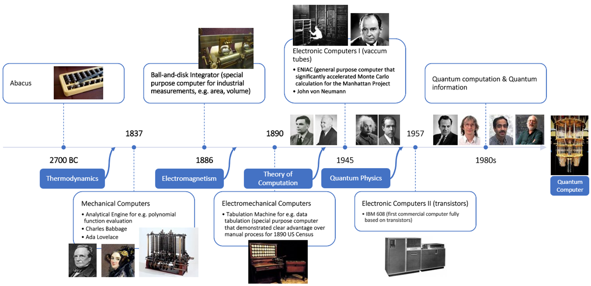
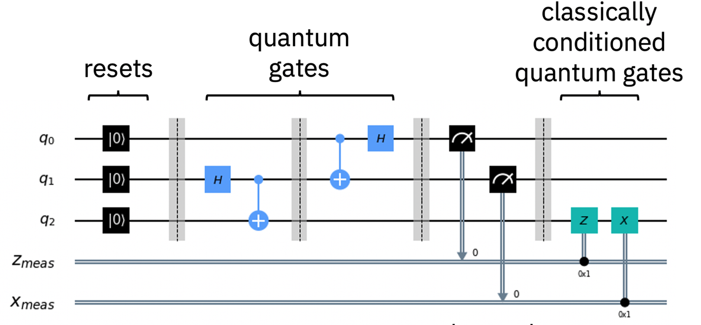
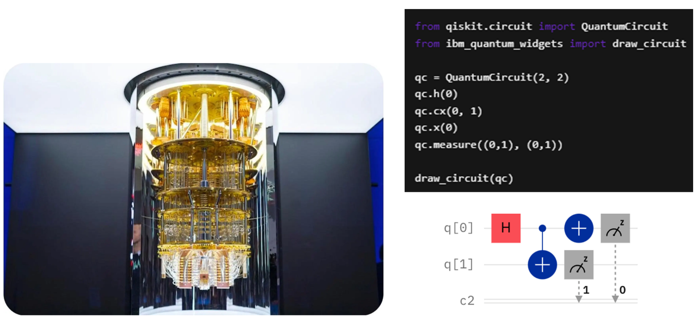
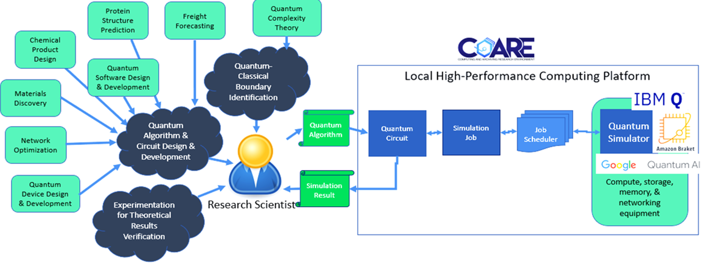

1. Quantum Computing: A Fast-Emerging Field and Its Potential Impact#
by Jul Jon R. General
1.1. Introduction#
Quantum computing is an emerging technology that is somehow gaining the attention of countries all over the world due to its potential impact to various industries.
The Advanced Science and Technology Institute (ASTI) is spearheading research on quantum computing as part of its mandate to strengthen and modernize the information and communications technology and microelectronics industry in the country.
ASTI undertakes research and development activities in this area through partnerships with local and foreign institutions that share the same goals for the Philippines. These partnerships are established through formal agreements in the form of Memorandum of Understanding or Agreement.
1.2. What is quantum computing?#
1.2.1. Classical vs. quantum computing#
Let us first introduce some terms that will be frequently mentioned in this material. When we say classical physical systems, we refer to physical systems that behave according to classical physics. The behavior of our common computing devices such as cellphones, laptops, and even the more powerful computers such as servers, are built upon the laws of classical physics. Classical physical systems are about the macroscale of things, such as transistors, processors, or resistors. The type of computing supported by classical physical systems is called classical computing.
On the other hand, quantum physical systems are physical systems that behave according to the laws of quantum mechanics. These systems exhibit unique physical phenomena that cannot be explained by the classical laws of physics. Quantum physical systems are in the nanoscale of things (or even much smaller) like the size of electrons and photons. The type of computing supported by quantum physical systems is referred to as quantum computing.
There is a growing buzz around quantum computing and just like other emerging fields of technologies, academic and industry experts have their say on the field. CalTech Professor John Preskill and Google CEO Sundar Pichai describe quantum computing as a form of computing that is fundamentally different compared to classical computing since it is based on quantum principles. It is considered a significant technological advancement that has the potential to be highly impactful just like artificial intelligence.
1.2.2. A brief history of computers#
Our civilization has made remarkable progress in computing, from the humble abacus of 27000 BC to the vacuum tube computers in the 1950s and to the present day generation of computers. (See the timeline of computers below.) At each pivotal point in the computer history, crucial discoveries paved the way for the emergence of new breeds of computers.

First, there was thermodynamics that lead to the invention of steam-powered mechanical engines. Based from the working principles of these early engines, mechanical computers were built that can perform very specific tasks.
Then, electromagnetism was discovered. This lead to the invention of vacuum tubes-based computers which were the size of a typical classroom.
Then came the invention of the theory of computation. This enabled better understanding of the nature of computation, the complexity of problems, and the metrics for the objective evaluation of computer algorithms.
Then quantum physics emerged in the early 1900s. This lead to the miniaturization of computers through the use of transistors instead of the old and failure-prone vacuum tubes.
In the 1970s to 1990s, investigations on the application of quantum physics to information theory was initiated leading to the establishment of quantum information theory. This field focuses on the deeper understanding of the nature of encoding, storing, and manipulating information when using quantum physical systems.
Eventually, quantum computing spun out of quantum information theory. The field of quantum computing is more concerned about the understanding of the nature of computation when using quantum physical systems as a computer and as information storage device. Companies like IBM, Microsoft, and D-Wave began developing physical prototypes of quantum computers.
At present, these prototypes of quantum computers are by nature sensitive and very costly to build and maintain. And so, access to these computers are only made available through cloud computing platforms. Google, Microsoft, and IBM are providing limited public access to their prototypes in a bid to speed up the adoption of quantum computers during the pre-commercialization stage of the technology.
1.2.3. A bit of quantum mechanics for computing#
As stated above, quantum computing is fundamentally different from the classical computing. To understand the difference, it is crucial to grasp the behaviors of quantum computing systems, which are grounded in quantum principles that diverge significantly from those governed by classical physics.
The smallest unit of information in classical digital computing is the binary digit or bit. The laptops you are using right now typically use 64 bits in addressing data to be stored in the storage disk. Each bit of information can hold either of the two exclusive states—denoted 0 or 1—used to represent a binary information.
The information that can be stored in the classical physical systems can be controlled to exist in either the logical state 0 or the logical state 1 but not both. These states 0 and 1 are mutually exclusive states which imply that if a bit is in the state 0, it remains unequivocally in the state 0, and vice versa for the logical state 1.
In quantum computing, the basic unit of information is the quantum digital bit or qubit. Similar to the classical bit, a qubit can be made represent a state 0 or 1. But a qubit can do more than that.
The two pure states in a qubit are denoted \(| 0 \rangle\) and \(| 1 \rangle\) instead of 0 and 1. A qubit can be physically manipulated so that it can designate an unknown state which can be a mixture of the states \(| 0 \rangle\) and \(| 1 \rangle\). This physical phenomenon is referred to as the superposition of all the possible states of a quantum physical system. Thus, a qubit \(| q \rangle\) prior to a measurement stores the following information
where \(\alpha\) and \(\beta\) are in general complex numbers. From this equation it becomes clear that a qubit cannot unequivocally be just a \(| 0 \rangle\) (or \(| 1 \rangle\)) unless \(\alpha = 1\) and \(\beta = 0\) (respectively, \(\alpha = 0\) and \(\beta = 1\)).
In addition to the phenomenon of superpositioning of states, quantum systems can also be physically manipulated such that two individual states become correlated with each other. Correlated states of quantum physical systems cannot be described independently as the collection of states of the individual quantum physical systems. Quantum physical systems that have correlated states are said to be entangled. Entanglement is not observed in classical physical systems.
When used in computing, the state of physical qubits are said to be in an entangled state or the qubits are said to be entangled qubits. Entangled states are harnessed in computing as the outcomes of measuring a specific porperty of any of the entangled qubits dictate the value of the corresponding property of the other entangled qubits, even when these qubits are physically distant from one another. Quantum entanglement allows two or more qubits to share a single quantum state, which opens up new possibilities for computing power and cryptography.
Another quantum physical phenomenon that is found to be useful in computing is the idea of quantum interference. With quantum interference, qubits can be intentionally manipulated so that their states will constructively or destructively interfere with each other. This physical interference between the states of qubits can be used to direct the quantum computer into the state that corresponds to our desired solution.
A typical algorithm targeted for a quantum computer requires some level of cleverness from the algorithm designer such that constructive and destructive interference will increase the probability of finding the qubits in the desired state corresponding to the solution to the computing problem at hand.
The physical phenomena of quantum superposition, quantum entanglement, and quantum interference in the states of qubits makes or quantum computing fundamentally unique from classical computing.
1.3. Quantum circuits#
Analogous to classical computing, the circuit model is also used in quantum computing. A quantum circuit represents a sequence of qubit initializations, quantum gates, and measurements. Similar to a classical circuit, quantum computation advances from the left to the right of the quantum circuit. See example quantum circuit below. Each vertical line in the circuit represents a single time step of computation.
To the left-most end of the circuit, we find the input logical qubits prepared to predetermined values as well as the input classical bits. The values of the qubits evolve according to the sequence of quantum gates acted on one or more of the qubits. The quantum gates correspond to quantum operations acting on quantum states. These operations bring about quantum superposition, entanglement, and/or induce interference in the affected the qubit states. The result of the quantum computation is determined by performing a so called measurement operation on the final states of the qubits. Being the last step in a quantum circuit, measurements are typically located at the rightmost end of the circuit.
Special forms of quantum circuits aimed at solving particular problems are called quantum algorithms. These algorithms represent specific sequences of circuit initializations, operations, and measurements aimed to execute directives on a quantum computer.
As observed, the quantum circuit computing model closely resembles its classical counterpart, except that quantum operations relate to physical phenomena that are not available in classical operations.

1.4. Quantum algorithms#
Algorithm designers need to be clever enough to come up with a sequence of physical operations on the qubits such that the final state of the qubits will correspond to the desired solution to a computing problem. These quantum operations may involve quantum superposition, quantum entanglement, and/or quantum interference effects on qubit states. Often, quantum algorithms are used in conjunction with classical algorithms since large-scale and fault-tolerant quantum computers are yet to be built.
What programming languages can we use to write software programs targeted to run on quantum computers? What software development frameworks are there for quantum computing?
IBM has cloud-based platform called IBM Quantum Experience that the public can access for free but for a limited number of qubits—5 to 7 qubits—depending on the quantum device where you want to run a quantum algorithm. IBM has also developed its own software programming framework for writing programs targeted to run on quantum computers called Qiskit. Qiskit has a well-written documentation available at qiskit.org.
An image of IBM’s recent prototype of a quantum processor is shown on the left photo below. A simple Qiskit instruction based on the Python programming language is displayed on the right side. Below it is th corresponding quantum circuit for the Qiskit instruction. Thus, one can write software for quantum processors in Python with IBM’s Qiskit framework.

Microsoft also has its own cloud-based quantum computing service known as the Azure cloud platform. In this platform, one can have access to Microsoft’s partners’ prototype quantum processors for a limited number of qubits. Microsoft also has their own quantum development kit called the Q# programming language that can be integrated with Python.
Given that quantum computers have yet to become widespread, many researcher opt to execute their quantum programs on quantum computers simulators using classical computers. However, this approach is limited to a small number of qubits, as the execution of simulated quantum circuits are on both time and space intensive on classical machines.
1.5. ASTI and quantum computing#
As part of its initiative to explore and innovate on advanced computing infrastructure, ASTI embarked on a two-year quantum computing project beginning May 2022. The project aims to make quantum circuit simulators more accessible to ASTI’s partner agencies by integrating quantum simulation frameworks like Qiskit on ASTI’s High-Performance Computing Facility.
ASTI hopes that the project will kickstart local research activities in quantum computing by providing users basic computing tools for quantum circuit simulation.

1.6. Potential use cases of quantum computing#
We would like to emphasize that quantum computing is not applicable to all computing problems. It is not useful in writing PowerPoint presentations or Word documents. It is not useful in writing emails. However, it is potentially useful is solving hard to compute problems. These problems are those which have very large solution spaces that takes so much time to identify the appropriate solution to a problem classical computers.
Perhaps the most obvious such problem is the identification of potential drugs in medicine research. Quantum computing could potentially accelerate the discovery of new drugs by simulating the behavior of molecules and predicting their interactions with target proteins. Quantum computing algorithms such as the Variational Quantum Eigensolver and Quantum Phase Estimation are particularly well-suited to these tasks.
Quantum computing could help researchers understand how proteins fold and how they interact with each other, which is crucial for understanding diseases and developing new treatments. The ability to simulate large biomolecules using quantum computers could provide insights into the structure and function of proteins that are difficult or impossible to obtain using classical computers.
Quantum computing could also improve medical imaging by optimizing image processing algorithms and enabling more accurate and efficient simulations of physical systems, such as the behavior of photons in biological tissues. Overall, quantum computing has the potential to transform medicine research by enabling faster and more accurate simulations of complex biological systems, leading to more effective treatments and better outcomes for patients.
In logistics, quantum computing can have a significant impact on transportation, supply chain management, and optimization. It can help optimize complex routing problems, such as determining the most efficient route for multiple vehicles to deliver packages to different destinations. It can also improve supply chain management by optimizing inventory management and distribution strategies, and by detecting and mitigating risks in the supply chain.
Quantum computing can help optimize investment portfolios using the annealing method for finding the minimum energy state of a physical system. This can help investors make better investment decisions and improve returns on investment.
In the energy sector, quantum computing has the potential to transform the sector by improving the efficiency and sustainability of energy production, distribution, and consumption. It can accelerate the discovery of new materials for use in energy production, such as solar panels and batteries. Quantum algorithms can be used to simulate the behavior of materials at the atomic and molecular scale, enabling researchers to predict their properties and performance more accurately.
It can also improve climate modeling by simulating the behavior of the atmosphere and ocean at a high level of detail, enabling researchers to predict and mitigate the impacts of climate change more accurately.
Quantum computing has both the potential to enhance security by improving cryptographic methods, and also poses a potential threat to current security measures by breaking classical encryption algorithms.
In cryptography, it can enable the development of new cryptographic methods that are more secure against attacks by quantum computers. For example, quantum key distribution (QKD) uses the principles of quantum mechanics to transmit secure keys between parties, which cannot be intercepted or altered without detection.
In cybersecurity it can also help improve cybersecurity by enabling faster and more accurate detection of security threats and vulnerabilities. Quantum machine learning algorithms can be used to analyze large datasets and identify patterns and anomalies in network traffic, which can help detect and prevent cyber attacks. It can also help in the development of new quantum-safe cryptographic methods that are resistant to attacks by both classical and quantum computers. This is important for securing sensitive data in the future as quantum computers become more powerful.
Quantum computing will require specialized hardware and software to operate, so the development of new IT products is necessary to fully realize the potential of quantum computing. The development of specialized software for quantum computing is necessary to program and operate quantum computers. These include programming languages, simulators, and compilers that enable users to write and execute quantum algorithms on quantum processors.
Also, the development of new quantum machine learning and artificial intelligence products will also be necessary to accelerate the development of these fields and take advantage of the unique capabilities of quantum computing.
The development of all these products will enable researchers and developers to explore new applications and use cases for quantum computing, leading to new innovations and breakthroughs in science, engineering, and other fields.
Thus to cope up with the potential developments of quantum computing in the Philippines, the IT education needs to be updated to include quantum computing topics and concepts. This could include adding quantum computing to existing courses such as computer architecture or algorithms, or creating new courses that focus specifically on quantum computing. Universities and educational institutions may encourage research in quantum computing through the development of new research programs and funding opportunities.